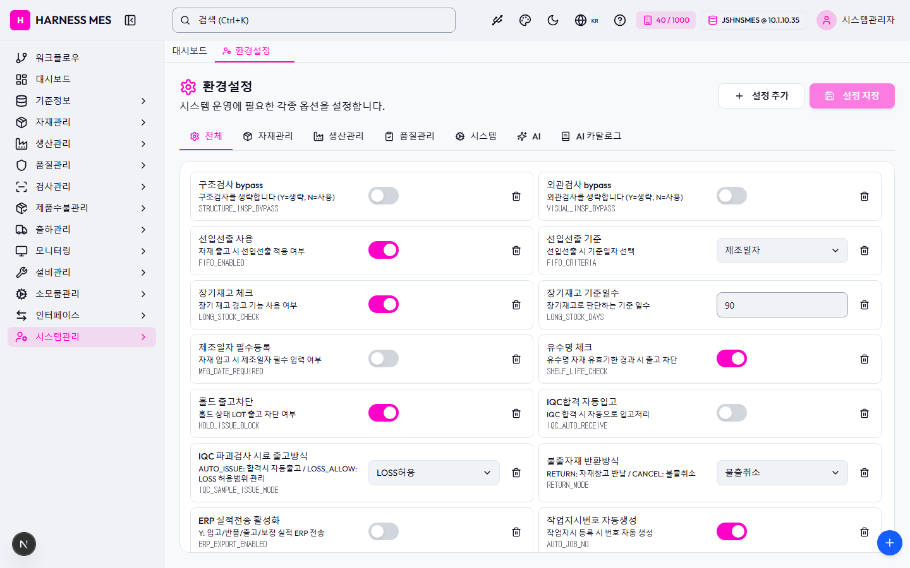

Route: /system/config
Status: PASS / HTTP 200
| 기능/버튼 | 처리 방식 | 상태 | 비고 |
|---|---|---|---|
| 화면 로드 | GET /system/config | 실행 | HTTP 200 |
| 라우트 prewarm | 직접 HTTP 확인 | 실행 | HTTP 200, 168ms |
| 초기 API 호출 | 브라우저 네트워크 수집 | 실행 | 10건 |
| 🇰🇷 | 화면 버튼 목록화 | 목록화 | 후속 메뉴별 세부 시나리오 실행 대상 |
| 시스템관리자 | 화면 버튼 목록화 | 목록화 | 후속 메뉴별 세부 시나리오 실행 대상 |
| 워크플로우 | 화면 버튼 목록화 | 목록화 | 후속 메뉴별 세부 시나리오 실행 대상 |
| 대시보드 | 화면 버튼 목록화 | 목록화 | 후속 메뉴별 세부 시나리오 실행 대상 |
| 기준정보 | 화면 버튼 목록화 | 목록화 | 후속 메뉴별 세부 시나리오 실행 대상 |
| 자재관리 | 화면 버튼 목록화 | 목록화 | 후속 메뉴별 세부 시나리오 실행 대상 |
| 생산관리 | 화면 버튼 목록화 | 목록화 | 후속 메뉴별 세부 시나리오 실행 대상 |
| 품질관리 | 화면 버튼 목록화 | 목록화 | 후속 메뉴별 세부 시나리오 실행 대상 |
| 검사관리 | 화면 버튼 목록화 | 목록화 | 후속 메뉴별 세부 시나리오 실행 대상 |
| 제품수불관리 | 화면 버튼 목록화 | 목록화 | 후속 메뉴별 세부 시나리오 실행 대상 |
| 출하관리 | 화면 버튼 목록화 | 목록화 | 후속 메뉴별 세부 시나리오 실행 대상 |
| 모니터링 | 화면 버튼 목록화 | 목록화 | 후속 메뉴별 세부 시나리오 실행 대상 |
| 설비관리 | 화면 버튼 목록화 | 목록화 | 후속 메뉴별 세부 시나리오 실행 대상 |
| 소모품관리 | 화면 버튼 목록화 | 목록화 | 후속 메뉴별 세부 시나리오 실행 대상 |
| 인터페이스 | 화면 버튼 목록화 | 목록화 | 후속 메뉴별 세부 시나리오 실행 대상 |
| 시스템관리 | 화면 버튼 목록화 | 목록화 | 후속 메뉴별 세부 시나리오 실행 대상 |
| 환경설정 | 화면 버튼 목록화 | 목록화 | 후속 메뉴별 세부 시나리오 실행 대상 |
| 설정 추가 | 화면 버튼 목록화 | 목록화 | 후속 메뉴별 세부 시나리오 실행 대상 |
| 설정 저장 | 화면 버튼 목록화 | 목록화 | 후속 메뉴별 세부 시나리오 실행 대상 |
| 전체 | 화면 버튼 목록화 | 목록화 | 후속 메뉴별 세부 시나리오 실행 대상 |
| 시스템 | 화면 버튼 목록화 | 목록화 | 후속 메뉴별 세부 시나리오 실행 대상 |
| AI | 화면 버튼 목록화 | 목록화 | 후속 메뉴별 세부 시나리오 실행 대상 |
| AI 카탈로그 | 화면 버튼 목록화 | 목록화 | 후속 메뉴별 세부 시나리오 실행 대상 |
| 구조검사 bypass | 화면 버튼 목록화 | 목록화 | 후속 메뉴별 세부 시나리오 실행 대상 |
| 외관검사 bypass | 화면 버튼 목록화 | 목록화 | 후속 메뉴별 세부 시나리오 실행 대상 |
| 선입선출 사용 | 화면 버튼 목록화 | 목록화 | 후속 메뉴별 세부 시나리오 실행 대상 |
| 장기재고 체크 | 화면 버튼 목록화 | 목록화 | 후속 메뉴별 세부 시나리오 실행 대상 |
| 제조일자 필수등록 | 화면 버튼 목록화 | 목록화 | 후속 메뉴별 세부 시나리오 실행 대상 |
| 유수명 체크 | 화면 버튼 목록화 | 목록화 | 후속 메뉴별 세부 시나리오 실행 대상 |
| 홀드 출고차단 | 화면 버튼 목록화 | 목록화 | 후속 메뉴별 세부 시나리오 실행 대상 |
| IQC합격 자동입고 | 화면 버튼 목록화 | 목록화 | 후속 메뉴별 세부 시나리오 실행 대상 |
| ERP 실적전송 활성화 | 화면 버튼 목록화 | 목록화 | 후속 메뉴별 세부 시나리오 실행 대상 |
| 작업지시번호 자동생성 | 화면 버튼 목록화 | 목록화 | 후속 메뉴별 세부 시나리오 실행 대상 |
| 작업일보 필수등록 | 화면 버튼 목록화 | 목록화 | 후속 메뉴별 세부 시나리오 실행 대상 |
| IQC 검사 필수 | 화면 버튼 목록화 | 목록화 | 후속 메뉴별 세부 시나리오 실행 대상 |
| OQC 사용여부 | 화면 버튼 목록화 | 목록화 | 후속 메뉴별 세부 시나리오 실행 대상 |
| 전체화면 보기 | 화면 버튼 목록화 | 목록화 | 후속 메뉴별 세부 시나리오 실행 대상 |
| AI 채팅 | 화면 버튼 목록화 | 목록화 | 후속 메뉴별 세부 시나리오 실행 대상 |
| 개선요청 등록 | 화면 버튼 목록화 | 목록화 | 후속 메뉴별 세부 시나리오 실행 대상 |
| 입력 필드 | DOM 수집 | 목록화 | 6개 |
| 선택 필드 | DOM 수집 | 목록화 | 7개 |
| Method | URL | Status | OK |
|---|---|---|---|
| GET | /api/health | 200 | OK |
| GET | /api/db-info | 200 | OK |
| GET | /api/health | 200 | OK |
| GET | /api/db-info | 200 | OK |
| GET | /api/system/comm-configs?commType=SERIAL&useYn=Y | 200 | OK |
| GET | /api/auth/me | 200 | OK |
| GET | /api/system/configs/active | 200 | OK |
| GET | /api/menu-categories/tree | 200 | OK |
| GET | /api/system/configs | 200 | OK |
| GET | /api/master/com-codes/all-active | 200 | OK |
requestfailed: GET /api/db-info net::ERR_ABORTED requestfailed: GET https://fonts.gstatic.com/s/outfit/v15/QGYvz_MVcBeNP4NJtEtq.woff2 net::ERR_ABORTED

H HARNESS MES 🇰🇷 40 / 1000 JSHNSMES @ 10.1.10.35 시스템관리자 워크플로우 대시보드 기준정보 자재관리 생산관리 품질관리 검사관리 제품수불관리 출하관리 모니터링 설비관리 소모품관리 인터페이스 시스템관리 대시보드 환경설정 환경설정 시스템 운영에 필요한 각종 옵션을 설정합니다. 설정 추가 설정 저장 전체 자재관리 생산관리 품질관리 시스템 AI AI 카탈로그 구조검사 bypass 구조검사를 생략합니다 (Y=생략, N=사용) STRUCTURE_INSP_BYPASS 구조검사 bypass 외관검사 bypass 외관검사를 생략합니다 (Y=생략, N=사용) VISUAL_INSP_BYPASS 외관검사 bypass 선입선출 사용 자재 출고 시 선입선출 적용 여부 FIFO_ENABLED 선입선출 사용 선입선출 기준 선입선출 시 기준일자 선택 FIFO_CRITERIA 전체 제조일자 입고일자 장기재고 체크 장기 재고 경고 기능 사용 여부 LONG_STOCK_CHECK 장기재고 체크 장기재고 기준일수 장기재고로 판단하는 기준 일수 LONG_STOCK_DAYS 제조일자 필수등록 자재 입고 시 제조일자 필수 입력 여부 MFG_DATE_REQUIRED 제조일자 필수등록 유수명 체크 유수명 자재 유효기한 경과 시 출고 차단 SHELF_LIFE_CHECK 유수명 체크 홀드 출고차단 홀드 상태 LOT 출고 차단 여부 HOLD_ISSUE_BLOCK 홀드 출고차단 IQC합격 자동입고 IQC 합격 시 자동으로 입고처리 IQC_AUTO_RECEIVE IQC합격 자동입고 IQC 파괴검사 시료 출고방식 AUTO_ISSUE: 합격시 자동출고 / LOSS_ALLOW: LOSS 허용범위 관리 IQC_SAMPLE_ISSUE_MODE 전체 자동출고 LOSS허용 불출자재 반환방식 RETURN: 자재창고 반납 / CANCEL: 불출취소 RETURN_MODE 전체 반납 불출취소 ERP 실적전송 활성화 Y: 입고/반품/출고/보정 실적 ERP 전송 ERP_EXPORT_ENABLED ERP 실적전송 활성화 작업지시번호 자동생성 작업지시 등록 시 번호 자동 생성 AUTO_JOB_NO 작업지시번호 자동생성 불량률 경고 기준(%) 이 비율을 초과하면 경고 알림 DEFECT_LIMIT_RATE 작업일보 필수등록 생산 완료 시 작업일보 필수 여부 WORK_REPORT_REQUIRED 작업일보 필수등록 자재 자동차감 시점 생산실적 저장 시 BOM 기